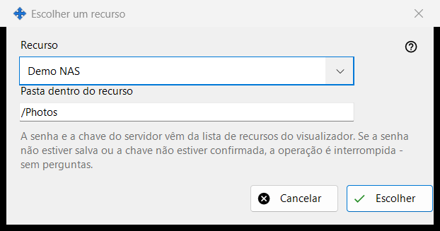
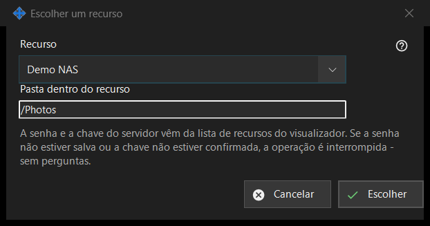

Escolher um recurso
Finalidade
Escolhe um recurso da lista de recursos do visualizador como origem ou destino de uma operação agendada. Abre-se a partir de «Recurso..» ao lado de Origem ou Destino na janela da operação agendada.


Nesta ordem
- Escolha o recurso na lista «Recurso».
- Verifique ou altere «Pasta dentro do recurso»; começa na pasta raiz do recurso.
- Clique em «Escolher». «Cancelar» mantém o lugar anterior.
Os elementos
Lista de recursos
São oferecidos apenas os servidores SFTP e as pastas de rede da lista do visualizador, ordenados por nome; recursos de outros tipos não aparecem. Se não houver nenhum, a janela diz: «Não há recursos adequados na lista de recursos. Adicione um servidor SFTP ou uma pasta de rede no visualizador.» e «Escolher» permanece desativado. Adicionar um recurso ou voltar a confiar nele faz-se no visualizador; esta janela não faz nenhuma ligação.
Pasta dentro do recurso
A pasta tem de estar dentro da raiz do recurso escolhido; caso contrário, «Salvar» na janela da operação recusa-a. Escolher outro recurso volta a preencher a caixa com a raiz desse recurso.
Executa sem perguntas
A palavra-passe e a chave do servidor vêm da lista de recursos do visualizador. Uma execução não pergunta nada: se a palavra-passe não estiver guardada ou a chave do servidor não estiver confirmada, a operação para e o histórico diz porquê. Um recurso só de leitura não pode ser o alvo de um movimento ou de uma exclusão, um recurso cuja raiz está protegida por um PIN é recusado, e um arquivo compactado aceita apenas pastas comuns.
Definições do gestor · Definições de partilha SFTP · Definições do servidor de troca